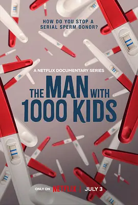

7.6
千子之父：捐精狂奇案
The Man with 1000 Kids
2024
英国
评分 7.6
导演:
Josh Allott
演员:
纪录片受访者
类型:
犯罪
剧情简介
在欧洲一片平静的郊区社区，多个家庭陆续走进了一个令人震惊的真实世界：他们曾经信任的捐精人——一位看似风度翩翩、富有魅力的男子——竟可能成为数百甚至上千个孩子的“父亲”。纪录片从荷兰出发，随着故事的推进，镜头追踪这些家庭：她们曾带着希望选择了这位捐精者，他亦承诺“只捐赠给五家家庭”。然而事实远比承诺更复杂，更深刻更黑暗。摄像机走进这些家长的日常：一对女同性伴侣在自家厨房翻看照片时，突然发现孩子的金发和另一边社交群里照片中的孩子过于相似，怀疑“这不会只是巧合”；一位单身母亲在社交媒体群聊中疯狂搜索，竟无意间连线数十位“同父异母”的孩子和家长；而捐精者本人仅用一句简单的“我只是想帮助更多家庭”来回应波澜壮阔的亲缘网络。纪录片并不回避与伦理、法律连接的痛点：数百名半血兄弟姐妹在全球不同角落成长、未来可能不知情地面临血缘交叉的风险。导演Josh Allott以冷静而有力的视角剖析结构：前半部分展现被捐家庭的期待与信任，随后冲击感骤增，随着调查展开，观众才意识到这不仅是一个家庭的悲喜，而是一场关于“捐精产业监管缺失”“匿名捐献后果”的全球伦理警示。镜头中既有温馨的家庭画面，也有记者逐条追问、法庭裁定、社群自发集合的场景，氛围在“惊讶—愤怒—无奈”之间波动。影片虽然中心聚焦犯罪与欺骗行为，但给人的触动更深：信任崩塌带来的伤害，身份认同的困惑，以及在缺乏制度监管下，技术与人性交叉的裂缝。它让人思考：当一个捐精者的承诺远远低于其实际行为，一家人的“独特孩子”变成了“千人网络中的一员”，那这些孩子、这些家长，该如何自处？纪录片留下了许多开放的余地，让观众感受而非宣判。